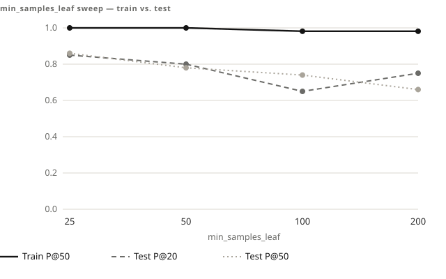
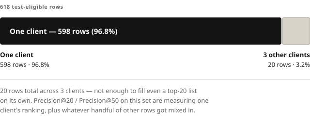

Case study — FlyRank ML internship, Lane 2
A Perfect Training Score, and Why I Didn't Trust It
Same pattern, smaller scale
Earlier on the same lane, a first-pass ranking formula —
days_since_last_update × impressions_90d — scored below
its own base rate (0.450 vs. 0.596 at the top 20). The easy read was that the
underlying signal, staleness, didn't predict anything. The real cause was a
scale mismatch: multiplying two features with wildly different ranges let the
larger one dominate regardless of which one actually carried signal. Replacing
raw values with percentile ranks before combining them fixed it —
Precision@20 went from 0.450 to 0.800. Same instinct held up again a few weeks
later, on a harder case — the one below.
The task was a decline-risk ranking model: given a page's traffic and engagement history, predict which pages are worth reviewing first. I trained a Random Forest on a client-holdout split — train on some clients, test on others the model has never seen — which is the honest way to check whether a model has actually learned something, rather than just memorized the clients in front of it.
The first result looked great. Too great.
Train Precision@20 and Precision@50: 1.000.
A perfect score on training data is not a result. It's a warning. The standard read is overfitting — the model has memorized its training rows instead of learning a pattern that generalizes — and the standard fix is regularization: force the model to make broader, less specific splits, so it can't just carve out a rule for every individual row it's seen.
The sweep

I ran a sweep across min_samples_leaf — 25, 50, 100, 200 — each
step forcing the model to require more data before it's allowed to split
further. If overfitting were the real cause, this should show up clearly: the
train score should come down as the model is forced to generalize, and the test
score should climb or at least stabilize as the gap between the two closes.
That's not what happened. Train Precision@50 barely moved — 1.000, 1.000, 0.980, 0.980 — while test scores swung with no consistent direction: Precision@20 went 0.850 → 0.800 → 0.650 → 0.750; Precision@50 went 0.860 → 0.780 → 0.740 → 0.660. Regularization should tame an overfit model in a predictable way. Instead, the harder I regularized, the less the test numbers behaved like anything I could read a trend from.
"If a fix stops behaving the way its own diagnosis predicts, that diagnosis is wrong — not the fix."
Email me for a screening call Or email directly: shahrez375@gmail.comThat mismatch was the actual signal. A model that's genuinely overfitting responds to regularization — maybe not perfectly, but predictably. Mine didn't respond at all in the direction the overfitting story required. So the question stopped being "how do I fix overfitting" and became "what else produces a perfect train score and an unstable test score that regularization can't touch."

The answer was sitting in the test set itself: 618 rows, and 598 of them — 96.8% — belong to a single client. The other three clients combined don't have enough rows to fill even a top-20 list. Precision@20 and Precision@50 on a test set that concentrated aren't measuring "does this model generalize." They're measuring how well the model happens to rank one client's pages, recomputed on whatever handful of rows from three other clients got mixed in — which is exactly the kind of number that can bounce around with every setting change for reasons that have nothing to do with model capacity.
This wasn't overfitting. It was a test set too small and too lopsided to produce a stable Precision@K in the first place — no amount of regularization was ever going to fix a sample-size problem.
What I did with that
I didn't chase a cleaner number by tuning further — there wasn't a cleaner number available at this test size, and reporting one would have meant reporting noise as a result. What holds up is the direction: Random Forest beat both the baseline score and the test set's base rate (0.519) at every regularization setting I tried, not just the lucky one. What doesn't hold up is the specific value — 0.86, or 0.65, or anything in between — because a 618-row, single-client-dominated test set can't tell you which of those numbers is the "real" one.
That's the honest place to stop for now: a directional result I can defend, and a precise number I'm explicitly not claiming.
Email me for a screening call.
Email me for a screening call Or email directly: shahrez375@gmail.com